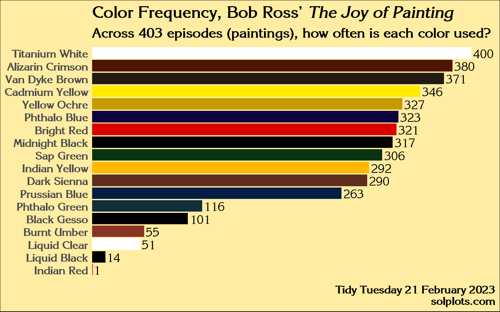

Every Tuesday, volunteers prepare a data set for people to practice data tidying and plotting skills with R. This is how I’ve interpreted Bob Ross Paintings.
Upon learning that the producers intentionally limited the show’s palette to 18 colors, I wanted to find the answer to this question: how often is each color used?
It’s also a great example because this information can’t be immediately gleaned from the data set. The granularity is at the episode level, meaning 403 episodes of the show are contained in 403 observations in the data.
The information pertaining to colors used and those colors’ hex code had to be messaged out of the source and be organized into a new data frame from which to build a plot.
Simple code reproduction
Code
# library(tidyverse)library(dplyr)library(ggplot2)library(stringr)# library(DataExplorer)library(tidyr)library(extrafont)library(ggtext)library(tidytuesdayR)#tt = tidytuesdayR::tt_load("2023-02-21")df = tt$bob_rosssuppressMessages({font_import()loadfonts()})# data analysis -----------------------------------------------------------# plot_missing(df) # nothing is missing!!## I want 2 plots from this data:## - One showing the total times each color was used## - One showing mean colors used per season (colored by most commonly used)# total times used --------------------------------------------------------colornames =c("Titanium_White","Bright_Red","Alizarin_Crimson","Van_Dyke_Brown","Cadmium_Yellow","Yellow_Ochre","Phthalo_Blue","Midnight_Black","Sap_Green","Indian_Yellow","Dark_Sienna","Prussian_Blue","Phthalo_Green","Black_Gesso","Burnt_Umber","Liquid_Clear","Liquid_Black","Indian_Red") |>sort()## colors# get_code = function(df, var) {df |> filter({{ var }})}# get_code(df, Yellow_Ochre) |> view()cols =tibble(color_name = colornames,codes =c('#4E1500','#000000','#DB0000','#8A3324','#FFEC00','#5F2E1F','#CD5C5C','#FFB800','#000000','#FFFFFF','#000000','#0C0040','#102E3C','#021E44','#0A3410','#FFFFFF','#221B15','#C79B00' ))# aggregate sums of TRUES for each color column to arrive at total counts for each color across all 403 episodescounts = df |>select(10:ncol(df)) |>mutate(across(everything(), ~sum(.))) |>distinct() |>pivot_longer(1:18,names_to ="color_name",values_to ="count") |>inner_join(cols) |>arrange(color_name) |>mutate(color_name =str_replace(color_name, "_", " ") |>str_replace("_", " "),color_label =if_else(color_name %in%c("Titanium White", "Liquid Clear"), "black", codes))
Code
counts |>ggplot(aes(x = count, y =reorder(color_name, count),fill = color_name,label = count)) +geom_col(show.legend =FALSE) +geom_text(aes(y = color_name),show.legend =FALSE,hjust =-.1,family ="ITC Korinna",size =5) +scale_fill_manual(values = counts$codes) +scale_x_continuous(expand =c(0, 0), limits =c(0, 425)) +theme_minimal() +labs(title ="<b>Color Frequency, Bob Ross' <i>The Joy of Painting</i></b>",subtitle ="Across 403 episodes (paintings), how often is each color used?",caption ="Tidy Tuesday 21 February 2023<br><b>@solplots</b>") +theme(text =element_text(family ="ITC Korinna",size =16,color ="black",face ="bold"),plot.title =element_markdown(),plot.subtitle =element_markdown(),axis.title =element_blank(),axis.text.x =element_blank(),panel.grid =element_blank(),plot.background =element_rect(fill ='#FFEDA3'),panel.background =element_rect(fill ="#FFEDA3",color ="#FFEDA3"),plot.caption =element_markdown())

Generated with R R version 4.3.2 (2023-10-31 ucrt) on 2025-07-09
Source Code
---title: "Color Frequency"date: "2025-07-09"description: "Submission to Tidy Tuesday for Week 8, 2023"categories: [R, tidyverse, art, paint]image: "images/bobross_updated.png"format: html: code-fold: true code-tools: trueexecute: warning: false message: false---## Data SourceEvery Tuesday, volunteers prepare a [data set](https://github.com/rfordatascience/tidytuesday/blob/main/data/2023/2023-02-21/readme.md) for people to practice data tidying and plotting skills with R. This is how I've interpreted Bob Ross Paintings.Upon learning that the producers intentionally limited the show's palette to 18 colors, I wanted to find the answer to this question: how often is each color used?It's also a great example because this information can't be immediately gleaned from the data set. The granularity is at the episode level, meaning 403 episodes of the show are contained in 403 observations in the data.The information pertaining to colors used and those colors' hex code had to be messaged out of the source and be organized into a new data frame from which to build a plot.## Simple code reproduction```{r}#| label: setup and load-data#| code-fold: true#| output: false#| message: false#| warning: false# library(tidyverse)library(dplyr)library(ggplot2)library(stringr)# library(DataExplorer)library(tidyr)library(extrafont)library(ggtext)library(tidytuesdayR)#tt = tidytuesdayR::tt_load("2023-02-21")df = tt$bob_rosssuppressMessages({font_import()loadfonts()})# data analysis -----------------------------------------------------------# plot_missing(df) # nothing is missing!!## I want 2 plots from this data:## - One showing the total times each color was used## - One showing mean colors used per season (colored by most commonly used)# total times used --------------------------------------------------------colornames =c("Titanium_White","Bright_Red","Alizarin_Crimson","Van_Dyke_Brown","Cadmium_Yellow","Yellow_Ochre","Phthalo_Blue","Midnight_Black","Sap_Green","Indian_Yellow","Dark_Sienna","Prussian_Blue","Phthalo_Green","Black_Gesso","Burnt_Umber","Liquid_Clear","Liquid_Black","Indian_Red") |>sort()## colors# get_code = function(df, var) {df |> filter({{ var }})}# get_code(df, Yellow_Ochre) |> view()cols =tibble(color_name = colornames,codes =c('#4E1500','#000000','#DB0000','#8A3324','#FFEC00','#5F2E1F','#CD5C5C','#FFB800','#000000','#FFFFFF','#000000','#0C0040','#102E3C','#021E44','#0A3410','#FFFFFF','#221B15','#C79B00' ))# aggregate sums of TRUES for each color column to arrive at total counts for each color across all 403 episodescounts = df |>select(10:ncol(df)) |>mutate(across(everything(), ~sum(.))) |>distinct() |>pivot_longer(1:18,names_to ="color_name",values_to ="count") |>inner_join(cols) |>arrange(color_name) |>mutate(color_name =str_replace(color_name, "_", " ") |>str_replace("_", " "),color_label =if_else(color_name %in%c("Titanium White", "Liquid Clear"), "black", codes)) ``````{r}counts |>ggplot(aes(x = count, y =reorder(color_name, count),fill = color_name,label = count)) +geom_col(show.legend =FALSE) +geom_text(aes(y = color_name),show.legend =FALSE,hjust =-.1,family ="ITC Korinna",size =5) +scale_fill_manual(values = counts$codes) +scale_x_continuous(expand =c(0, 0), limits =c(0, 425)) +theme_minimal() +labs(title ="<b>Color Frequency, Bob Ross' <i>The Joy of Painting</i></b>",subtitle ="Across 403 episodes (paintings), how often is each color used?",caption ="Tidy Tuesday 21 February 2023<br><b>@solplots</b>") +theme(text =element_text(family ="ITC Korinna",size =16,color ="black",face ="bold"),plot.title =element_markdown(),plot.subtitle =element_markdown(),axis.title =element_blank(),axis.text.x =element_blank(),panel.grid =element_blank(),plot.background =element_rect(fill ='#FFEDA3'),panel.background =element_rect(fill ="#FFEDA3",color ="#FFEDA3"),plot.caption =element_markdown()) ```------------------------------------------------------------------------*Generated with R `r R.version.string` on `r Sys.Date()`*